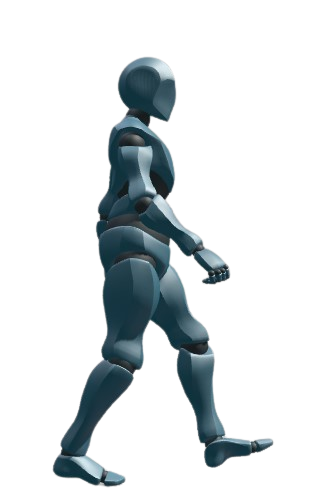
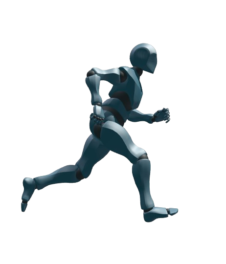
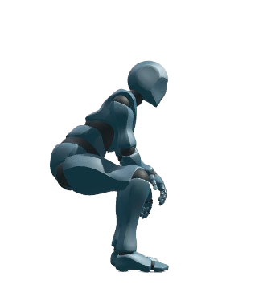

기본 이동 로직_걷기 · 달리기 · 앉기
 →
→
좌우 이동 · 걷기
좌우 방향키를 누르고 있는 동안 이동한다. (GetKey)
방향키를 떼면 관성 없이 즉시 정지한다.
이동 속도: 맵 디자인 이후 결정
 →
→
좌우 이동 · 달리기
걷는 도중 Shift + 좌우 방향키로 해당 방향으로 달린다.
Shift만 떼면 걷기로, 방향키를 떼면 정지 상태로 전환한다.
이동 속도: 맵 디자인 이후 결정
 →
→
앉기 · 앉아서 걷기
정지 상태에서 아래 방향키를 누르고 있으면 앉는다. (GetKey)
걷는 도중 아래 방향키를 누르면 앉아서 걷고, 이동 속도가 감소한다.
아래 방향키를 떼면 원래 상태로 복귀한다.